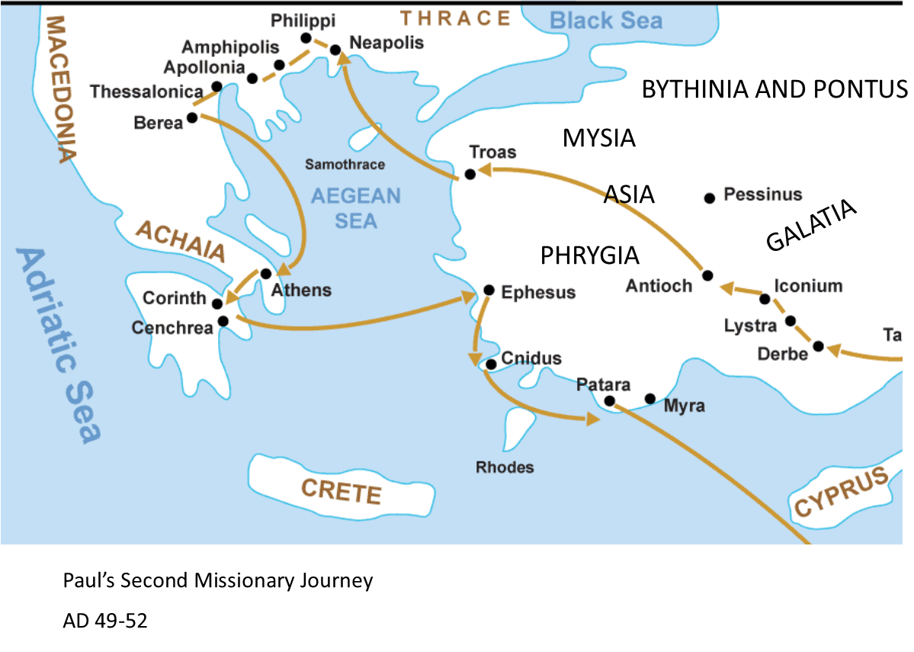

Philippians Background Info
Context
Context is vitally important for understanding the meaning and intention of a letter. Getting a grasp on the background information for the sender and receiver is very helpful and a crucial part of the context.
About Philippi the City
- Philippi was a roman colony that was full of retired soliders
- People were known there for their patriotic nationalism
- It was a leading city in it's district (Acts 16:12)
- Paul faced resistence when introducing the true King (vs. Emporer)
- Philippi may not have had any synagogues
- Those who followed Jesus faced resistence and even persecution but they remained faithful
Questions
- Who wrote this letter? The Apostle Paul
- Who is this letter written to? Christians in Philippi
- When was it written? Traditionally 61/62 A.D.
- What is the situation of the recipients?
- The Church in Philippi was founded about eleven years before this letter - during Paul's second missionary journey (Acts 16:11-40). He went in response to his Macedonian vision
- It was the first church on the continent of Europe
- The Philippian church likely consisted of several house churches
- Division existed and was likely disagreement between two of Paul's fellow laborers - maybe leaders of separate house churches (4:2-4)
- Any opposition that may have existed to Paul is likely from Jewish Christians who advocated circumcision (3:2-21)
- What is the situation of the author?
- Paul is writing from his Roman house arrest (Acts 28:30-31).
- He was waiting for his court appearance before Caesar
- This was around the year A.D. 61
- Why did the Paul write this letter?
- To thank the Philippians (4:10-20)
- The Philippian churches had sent one of their members Epaphroditus to Paul to give him a financial gift to help him while he was in prison.
- To address issues
- To exhort them to work together
- To call them to unity (1:27, 2:2, 14)
Paul's 2nd Missionary Journey
Notice Philippi north of the Aegean Sea. Paul visited the city during his 2nd missionary journey. Read Acts 16:6-40
